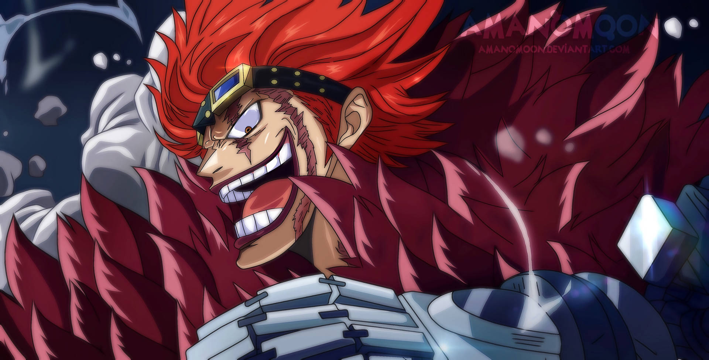
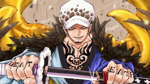

Rivals
Eustass Kid
Eustass "Captain" Kid is a fierce and ambitious pirate who leads the Kid Pirates.
Trafalgar D. Water Law
Law, the captain of the Heart Pirates, is a cunning strategist and master of the Ope Ope no Mi Devil Fruit.
These rivals challenge Luffy to push beyond his limits.
3 Main Enemies/foes
Big Mama
Charlotte Linlin, better known as "Big Mom" she is the captain of the Big Mom Pirates
Kaido
"Come on, I'll take you all on! No one can even lay a scratch on me!"' Quote from koei fandom
BlackBeard
"I'm “darkness”... Historically the world's most villainous Devil Fruit power." Quote from koei fandom